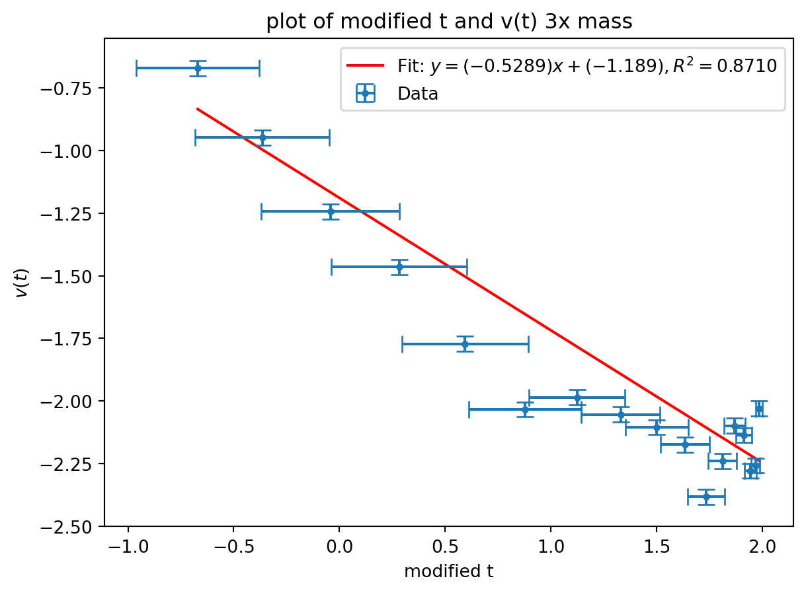
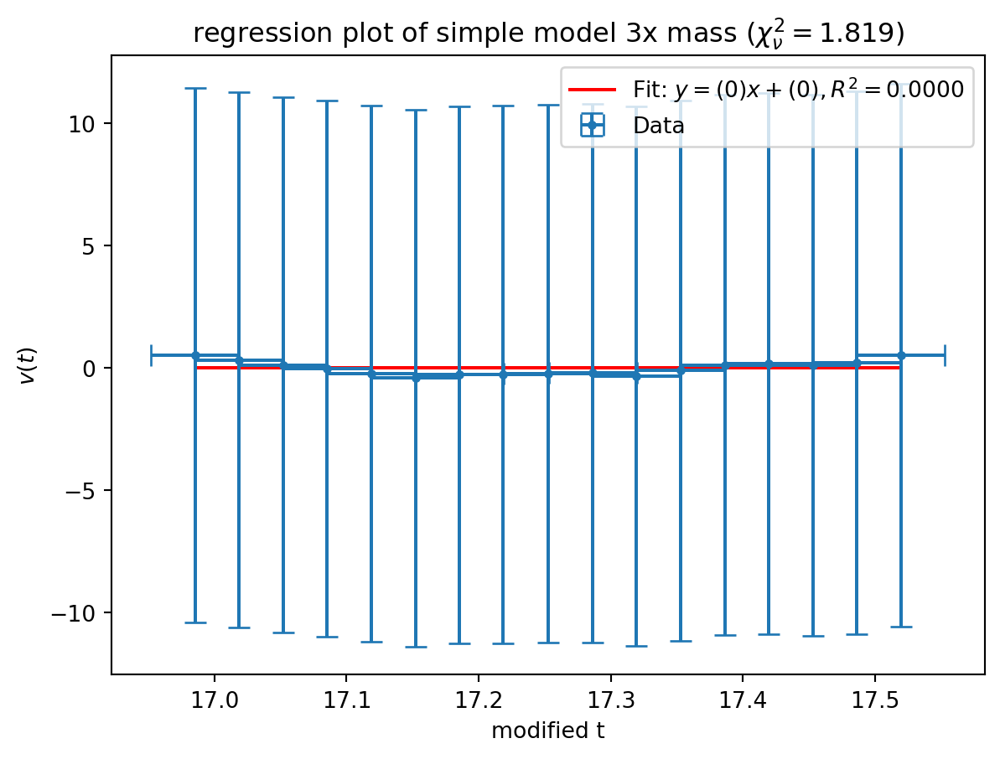
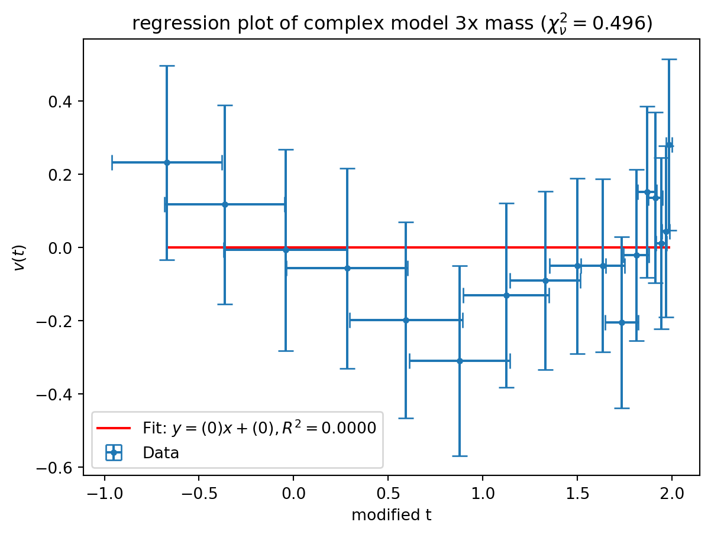
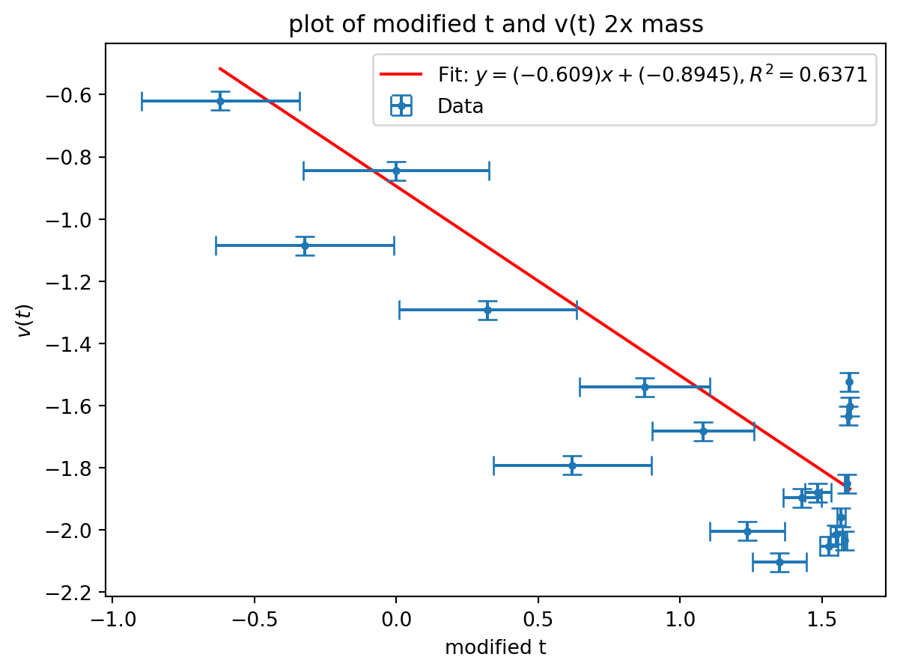
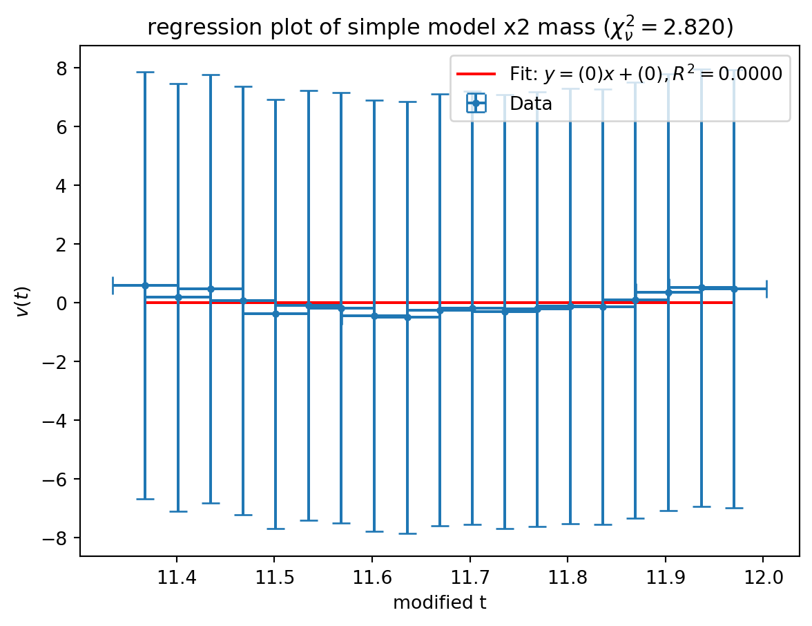
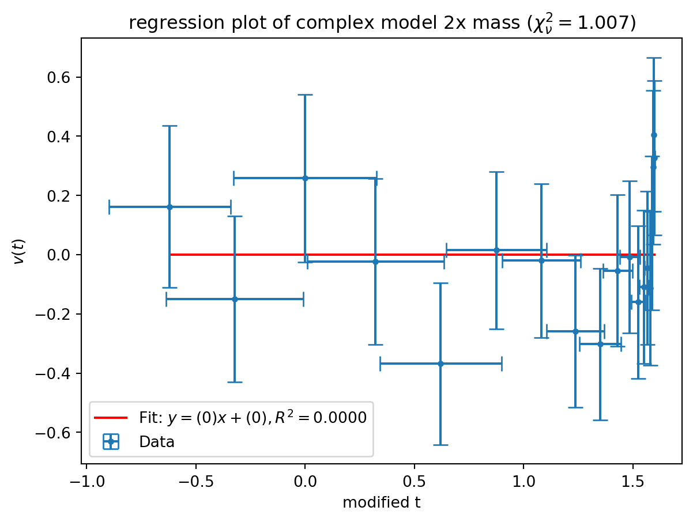
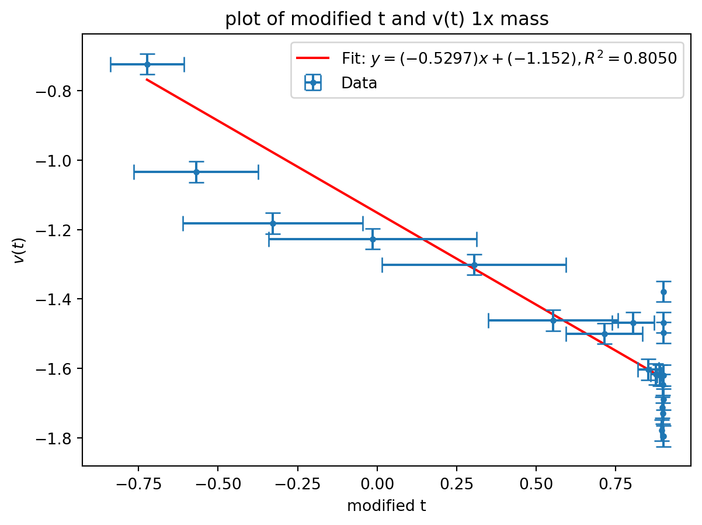
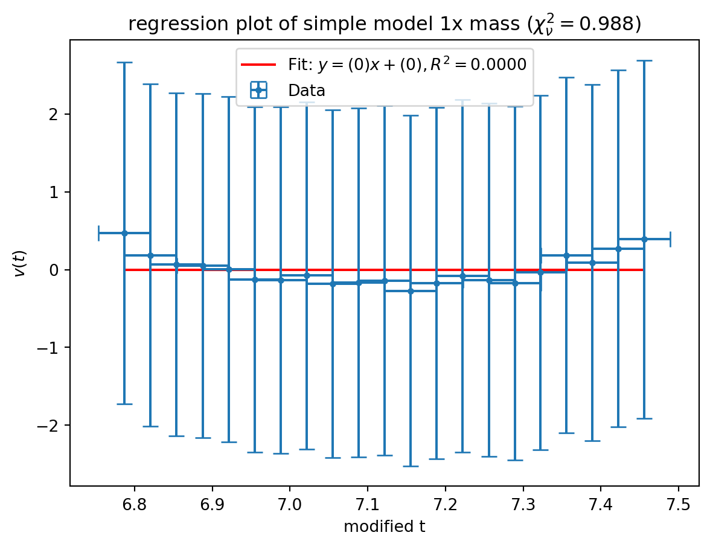
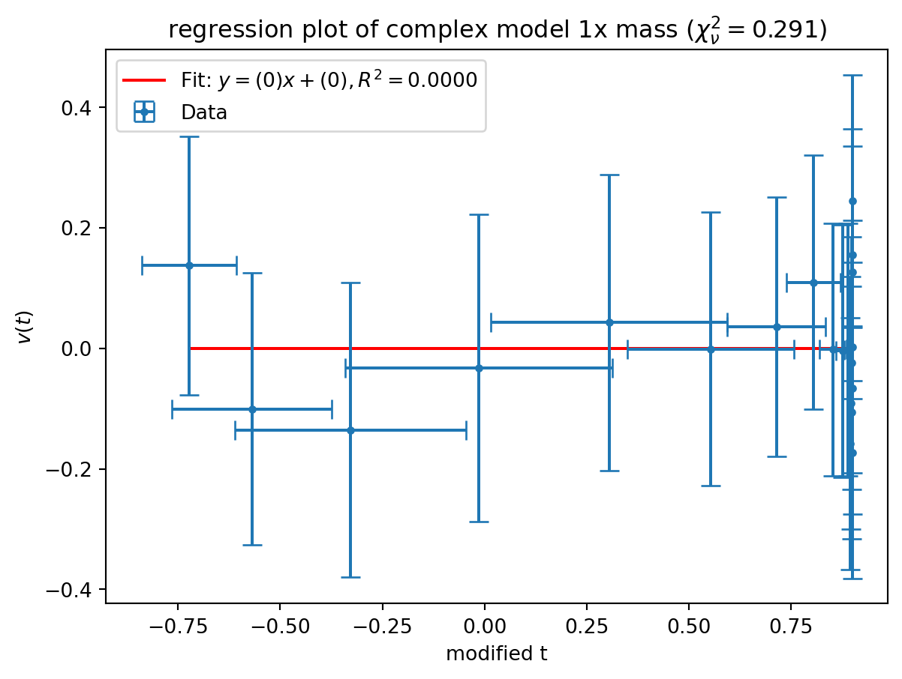

import warnings
from math import pi, sqrt
import matplotlib.pyplot as plt
import numpy as np
from scipy import constants, odr
from uncertainties import UFloat, ufloat, umath
warnings.filterwarnings("ignore", category=FutureWarning, module="uncertainties")
warnings.filterwarnings(
"ignore",
category=FutureWarning,
message=r"AffineScalarFunc\.__abs__\(\) is deprecated",
)
warnings.filterwarnings(
"ignore", category=UserWarning, message="Using UFloat objects with std_dev==0"
)
def fit_odr(x: list[UFloat], y: list[UFloat], zero_intercept: bool = False):
x_nom, x_err = [v.n for v in x], [v.s for v in x]
y_nom, y_err = [v.n for v in y], [v.s for v in y]
data = odr.RealData(x_nom, y_nom, sx=x_err, sy=y_err)
if zero_intercept:
model, beta0 = odr.Model(lambda p, x: p[0] * x), [1]
else:
model, beta0 = odr.Model(lambda p, x: p[0] * x + p[1]), [1, 0]
out = odr.ODR(data, model, beta0=beta0).run()
slope = ufloat(out.beta[0], out.sd_beta[0])
intercept = (
ufloat(out.beta[1], out.sd_beta[1]) if not zero_intercept else ufloat(0, 0)
)
y_pred = model.fcn(out.beta, np.array(x_nom))
ss_res = np.sum((np.array(y_nom) - y_pred) ** 2)
ss_tot = np.sum(
np.array(y_nom) ** 2
if zero_intercept
else (np.array(y_nom) - np.mean(y_nom)) ** 2
)
r_squared = 1 - ss_res / ss_tot
return slope, intercept, r_squared
def compsigma(a, b):
return abs((a.n - b.n) / ((((a.s**2) + (b.s**2)) ** (1 / 2))))
def plot(
x,
y,
fitodr=None,
title="default title",
xlabel="default xlabel",
ylabel="default ylabel",
show=True,
):
if fitodr is None:
fitodr = fit_odr(x, y)
slope, intercept, r_squared = fitodr
plt.figure()
first = x[0].n
last = x[-1].n
plt.plot(
[first, last],
[first * slope.n + intercept.n, last * slope.n + intercept.n],
"r-",
label=f"Fit: $y = ({slope.n:.4g})x + ({intercept.n:.4g}),R^2 = {r_squared:.4f}$",
)
plt.errorbar(
[v.nominal_value for v in x],
[v.nominal_value for v in y],
xerr=[v.std_dev for v in x],
yerr=[v.std_dev for v in y],
capsize=5,
linestyle="none",
marker="o",
markersize=3,
label="Data",
)
plt.title(title)
plt.xlabel(xlabel)
plt.ylabel(ylabel)
plt.legend()
if show:
plt.show()
def plot_residuals(
x,
y,
fitodr=None,
title="Residuals",
xlabel="default xlabel",
ylabel="Residual (y - fit)",
show=True,
):
if fitodr is None:
fitodr = fit_odr(x, y)
slope, intercept, r_squared = fitodr
residuals = [yi - (slope * xi + intercept) for xi, yi in zip(x, y)]
sigma_eff = [
sqrt(yi.std_dev**2 + (slope.n * xi.std_dev) ** 2) for xi, yi in zip(x, y)
]
chi2 = sum((r.nominal_value**2) / (s**2) for r, s in zip(residuals, sigma_eff))
dof = len(y) - 1
chi2_reduced = chi2 / dof
zero_fit = (
ufloat(0, 0),
ufloat(0, 0),
0.0,
) # was None — plot()'s label needs a float
plot(
x,
residuals,
fitodr=zero_fit,
title=f"{title} ($\\chi^2_\\nu = {chi2_reduced:.3f}$)",
xlabel=xlabel,
ylabel=ylabel,
show=show,
)
return chi2_reducedBryce Tabangcura - Lab Week 2
Lab partner: haven bunter-gooley
Preamble
The entire experiment, and all data has been done and interpolated in python, so to start with lets start with the preamble python, this being imports and helper functions. I have 4 helper functions, one to fit a linear fit, one to compare sigma between two values, another to plot and another to plot residuals. the imports and warning stuff can be mostly ignored.
Experiment 1
Aim
The aim of this experiment is to experimentally determine whether in small real life situations drag is negligible by fitting the values of the two models, one without drag and one with drag and determining which one has the better fit.
Method
We start extremely simple, we tape a 1 meter ruler on the flat side of a table, this is to our aid for two reasons, the first reason is by taping to the flat side of the ruler, we create a rigid straightness, and by taping it flimsily, we can allow the ruler to bend due to gravity to a natural position, which is as straight downwards as possible.
Then, with simply a phone or some other measurement device, recorded dropping different densities of paddy pen, first of 3, then of 2, then of just the singular paddy pen.
We then interpolated the data in the physics tracking software, which we then created lists of in python, to then data analyze.
Results
The data is recorded as python lists, its important to know that t1 does not refer to paddy pen number, only by order of experiment, so t1 is actually the time for the 3 paddy pen, t2 is the 2 paddy pen and t3 is the singular paddy pen.
t1 = [
16.95187,
16.98528,
17.01869,
17.05198,
17.08527,
17.11867,
17.15207,
17.18536,
17.21864,
17.2525,
17.28636,
17.31963,
17.35291,
17.38632,
17.41973,
17.45302,
17.48631,
17.51971,
17.55311,
]
x1 = [
-0.001129377,
-0.01952208,
-0.04594791,
-0.08272536,
-0.1287012,
-0.1804174,
-0.2470825,
-0.3160343,
-0.3792535,
-0.4539597,
-0.5217601,
-0.5999082,
-0.6803669,
-0.7493266,
-0.8205849,
-0.8918471,
-0.9723018,
-1.042411,
-1.107931,
]
vx1 = [
-0.670713,
-0.9475753,
-1.242956,
-1.464893,
-1.772177,
-2.033575,
-1.985211,
-2.054159,
-2.104627,
-2.17401,
-2.383073,
-2.240528,
-2.098374,
-2.13674,
-2.278792,
-2.257702,
-2.030371,
]
t2 = [
11.33464,
11.36799,
11.40133,
11.43468,
11.46802,
11.50137,
11.53471,
11.56852,
11.60233,
11.63566,
11.66898,
11.7023,
11.73562,
11.76894,
11.80238,
11.83581,
11.86907,
11.90287,
11.93667,
11.97,
12.00333,
]
x2 = [
0.02184259,
0.01612001,
-0.01951412,
-0.05628161,
-0.07583755,
-0.1424967,
-0.1953663,
-0.2459492,
-0.3091684,
-0.3804347,
-0.4493924,
-0.5068651,
-0.5746755,
-0.6436432,
-0.709159,
-0.7746728,
-0.8448117,
-0.8988326,
-0.9551799,
-1.00114,
-1.062052,
]
vx2 = [
-0.6201438,
-1.085662,
-0.84457,
-1.292795,
-1.792333,
-1.540491,
-1.68291,
-2.003259,
-2.104061,
-1.897089,
-1.879874,
-2.052355,
-2.014566,
-1.959566,
-2.034112,
-1.851595,
-1.632666,
-1.52394,
-1.603088,
]
t3 = [
6.753778,
6.787133,
6.820489,
6.853844,
6.887567,
6.921289,
6.954711,
6.988133,
7.0214,
7.054667,
7.088089,
7.121511,
7.154789,
7.188067,
7.221922,
7.255778,
7.289067,
7.322356,
7.355756,
7.389156,
7.422444,
7.455733,
7.489144,
]
x3 = [
0.0115069,
-0.005722574,
-0.03675753,
-0.07469025,
-0.1160689,
-0.1574495,
-0.2034292,
-0.2551515,
-0.3034498,
-0.3528735,
-0.4103422,
-0.4609431,
-0.5184079,
-0.5793325,
-0.6333593,
-0.690842,
-0.74946,
-0.8103767,
-0.8621149,
-0.9103773,
-0.9701645,
-1.008095,
-1.062118,
]
vx3 = [
-0.7234841,
-1.033826,
-1.182379,
-1.227072,
-1.301081,
-1.461633,
-1.499808,
-1.468767,
-1.602852,
-1.616733,
-1.620174,
-1.778805,
-1.712286,
-1.646842,
-1.729119,
-1.795414,
-1.689259,
-1.497016,
-1.620205,
-1.467727,
-1.378614,
]We also set g to be 9.81, just convention.
g = 9.81We can now interpolate and plot the data. Lets start with the simple model that assumes drag is negligible. \[v(t) = v_0 - gt\] If I plot \(v_(t)\) and \(t\), I can then directly fit a linear equation to the model, and then interpolate the chi squared value of that.
For the more complex model \[v(t) = v_T \tanh\left[\frac{gt}{v_T} + \tanh^{-1}\left(\frac{v_0}{v_T}\right)\right]\] if we allow the y axis to be v(t), we can make the x axis \(v_T \tanh\left[\frac{gt}{v_T} + \tanh^{-1}\left(\frac{v_0}{v_T}\right)\right]\). We can interpolate the chi squared value of that. And we can try and see which one fits better, thats pretty much what we do
Also I’ve chose v01 to be the first velocity datapoint, and vt1 to be the last velocity datapoint. We will guesstimate this better later for the later questions.
zerot1 = [ufloat(n - t1[1], 1 / 30) for n in t1[1:-1]]
v01 = vx1[0]
vt1 = vx1[-1]
changedt1 = [vt1 * umath.tanh(g * t / vt1 + umath.atanh(v01 / vt1)) for t in zerot1]
plot(
[n for n in changedt1],
[ufloat(n, 0.03) for n in vx1],
xlabel="modified t", ylabel=r"$v(t)$",title="plot of modified t and v(t) 3x mass"
)
plot_residuals(
[ufloat(n, 1 / 30) for n in t1[1:-1]],
[ufloat(n, 0.2) for n in vx1],
xlabel="modified t", ylabel=r"$v(t)$",title="regression plot of simple model 3x mass"
)
plot_residuals(
[n for n in changedt1],
[ufloat(n, 0.2) for n in vx1],
xlabel="modified t", ylabel=r"$v(t)$",title="regression plot of complex model 3x mass"
)
pass


We do this similarly for the other two datasets.
zerot2 = [ufloat(n - t2[1], 1 / 30) for n in t2[1:-1]]
v02 = vx2[0]
vt2 = vx2[-1]
# vt2 = -1.3
# vt2 = -0.85
changedt2 = [vt2 * umath.tanh(g * t / vt2 + umath.atanh(v02 / vt2)) for t in zerot2]
plot(
[n for n in changedt2],
[ufloat(n, 0.03) for n in vx2],
xlabel="modified t", ylabel=r"$v(t)$", title="plot of modified t and v(t) 2x mass"
)
plot_residuals(
[ufloat(n, 1 / 30) for n in t2[1:-1]],
[ufloat(n, 0.2) for n in vx2],
xlabel="modified t", ylabel=r"$v(t)$", title="regression plot of simple model x2 mass"
)
plot_residuals(
[n for n in changedt2],
[ufloat(n, 0.2) for n in vx2],
xlabel="modified t", ylabel=r"$v(t)$", title="regression plot of complex model 2x mass"
)
pass
zerot3 = [ufloat(n - t3[1], 1 / 30) for n in t3[1:-1]]
v03 = vx3[0]
vt3 = vx3[-1]
vt3 = -1.5
vt3 = -0.9
changedt3 = [vt3 * umath.tanh(g * t / vt3 + umath.atanh(v03 / vt3)) for t in zerot3]
plot(
[n for n in changedt3],
[ufloat(n, 0.03) for n in vx3],
xlabel="modified t", ylabel=r"$v(t)$", title="plot of modified t and v(t) 1x mass"
)
plot_residuals(
[ufloat(n, 1 / 30) for n in t3[1:-1]],
[ufloat(n, 0.2) for n in vx3],
xlabel="modified t", ylabel=r"$v(t)$", title="regression plot of simple model 1x mass"
)
plot_residuals(
[n for n in changedt3],
[ufloat(n, 0.2) for n in vx3],
xlabel="modified t", ylabel=r"$v(t)$", title="regression plot of complex model 1x mass"
)
pass





Conclusions
For all three graphs, the linear equation graph has a greater chi squared value than the complex counterpart. This means that the fit is farther away from the datapoints. So just simply based on which one fits better the complex model fits much better.
Ratio between velocities
Guesstimation, I varied \(v_t\) and estimated vt1 to be 1.0 with a range of 0.2. and similarly vt_two to be 1.4 with a range of 0.3.
I guessed this by varying V_t until a considerable change in chi squared (change in hundredths)
We get a ratio of 1.4 \(\pm\) 21, between the two values. Theoretically, since we’re doubling the mass, the terminal velocity should change by a factor of \(sqrt(2)\). Which is inside our confidence interval, and which is what we should expect to see with respects to prelab question 2.
vt_one_pan = ufloat(1.0, 0.2)
vt_two_pan = ufloat(1.4, 0.3)
ratio = vt_two_pan / vt_one_pan
print(ratio)1.4+/-0.4